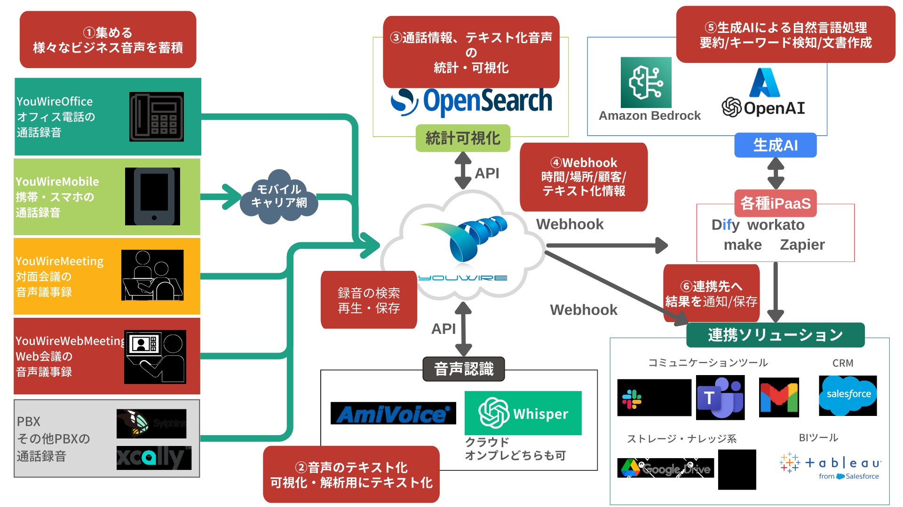

こんな「もったいない」働き方、
していませんか？
あなたの組織が抱える課題、YouWireが解決します。
毎日、膨大な議事録や日報の手入力に時間を奪われている
会話は自動でテキスト化され、AIが要約。手入力の時間はゼロになります。
顧客との『言った・言わない』問題でトラブルが絶えない
全ての会話が証跡として記録され、認識の齟齬を防ぎ、信頼を構築します。
顧客の声がデータとして蓄積されず、改善点を見逃している
顧客の声を分析可能なデータに変え、サービス改善や新商品開発に繋げます。
営業状況や商談の進捗が不透明で、適切な指示が出せない
商談内容がリアルタイムで可視化され、的確なマネジメントが可能になります。
コンプライアンスリスクが潜在しているかもしれない
AIがリスクのある発言を自動検知。プロアクティブなリスク管理を実現します。
カスタマーハラスメント対策が後手に回っている
AIによるカスハラレベルの自動評価で、従業員を保護し、健全な職場環境を維持します。
YouWireの『会話データプラットフォーム』
3つの核心的強み
私たちは、会話を「価値あるデータ資産」に変え、データに基づいた意思決定と劇的な業務効率化を強力に推進します。
1. あらゆる会話を
「まるごと」データ化
携帯・固定電話、ウェブ会議、対面会議まで、ビジネスの全会話を抜け漏れなく録音し、高精度AIでテキスト化。
2. 既存SaaSと
「シームレス」に連携
強力なWebhook機能で、会話データを会話終了直後に指定SaaSへ自動連携。手作業をなくし、データ活用を加速させます。
3. 生成AIとの連携で
「無限の可能性」を解放
連携された会話データは生成AIの「燃料」に。会議要約、ニーズ分析、リスク検知など、カスタムAIソリューションの基盤となります。
30のビジネス変革ユースケース
YouWireの強力な連携機能が、御社の様々なビジネスシーンで具体的な成果をもたらします。関心のある分野を選択してください。
YouWire全体構成図
Webhookによるシームレスな連携
YouWireのWebhook機能は、会話データを「流動的な資産」に変えるゲートウェイです。録音された通話情報やAI認識テキストをリアルタイムで外部システムへ自動送信。御社のワークフローに会話データを自動で組み込み、価値を最大化します。
会話データ発生
リアルタイム送信
特別な追加料金は不要です（※別途お申し込みは必要です）
導入事例
YouWireは様々な業界で成果を出しています。
「コンプライアンスチェックの時間が80%削減され、リスク管理体制が飛躍的に向上しました。」
A社（金融業界）
「顧客の潜在ニーズをAIが抽出し、成約率が20%向上。顧客満足度も劇的に改善しました。」
B社（不動産仲介）
自動要約テキスト化と自動CRM連携で、後処理時間が1/10以下への削減に成功しました。
C社（コールセンター）
会話データの活用で、
ビジネスを次のステージへ。
YouWireの導入にご興味をお持ちいただけましたら、お気軽にお問い合わせください。専門の担当者が御社の課題に合わせた活用方法をご提案します。